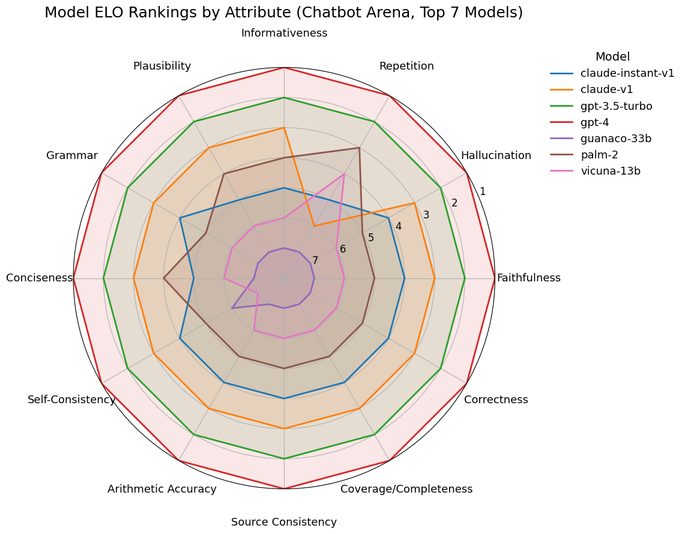
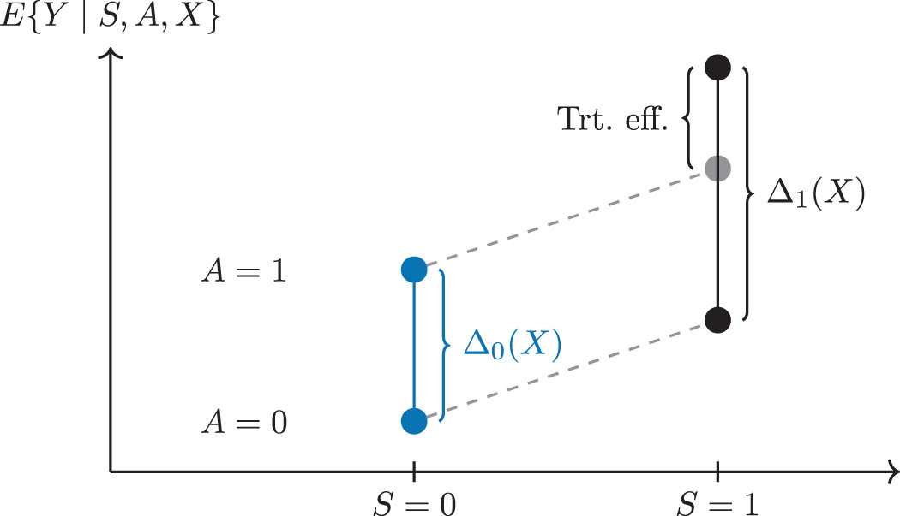
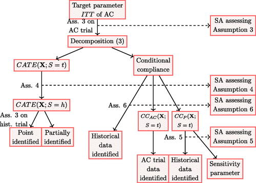
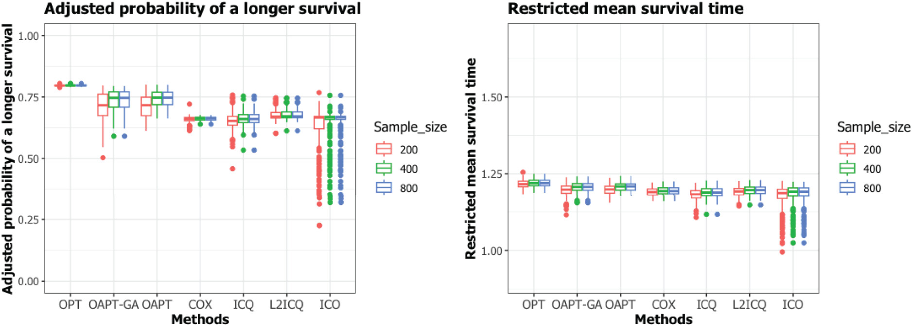

|
Qijia He I am a PhD candidate in the Department of Statistics at the University of Washington, where I am co-advised by professor Alex Luedtke and Bo Zhang. Previously, I received my MS degree in Statistics at the University of Washington in 2023. Before graduate school, I obtained my BS degree in Statistics from Sun Yat-sen University in 2021. I have broad research interests spanning causal inference, machine learning, and multimodal large language models. My work includes projects on individualized optimal decision-making, variable importance for heterogeneous treatment effects, mediation analysis, and generalizability for causal inference, as well as recent contributions to LLM applications, such as multimodal figure-to-code generation and clustering with LLM-guided constraints during my internship. Contact me: heqj3@uw.edu |
{kind=link}
Selected Research |
|

|
Rethinking Human Preference Evaluation of LLM Rationales
Ziang Li, Manasi Ganti, Zixian Ma, Helena Vasconcelos, Qijia He, Ranjay Krishna XLLM-Reason-Plan @ COLM 2025 — Best Paper Award (Honorable Mention) Large language models (LLMs) generate rationales that improve reasoning and interpretability, but existing evaluations using binary human or LLM preferences are limited and opaque. We introduce an attribute-based evaluation framework that defines key rationale qualities, explains human preferences, and enables more nuanced model comparisons through attribute-specific analysis. |
|

|
Role of placebo samples in observational studies
Ting Ye, Qijia He, Shuxiao Chen, Bo Zhang Journal of Causal Inference, 2025 supplement We proposed a framework for using placebo samples in observational studies to detect and correct for unmeasured confounding bias. It develops identification assumptions and estimation methods—including regression, weighting, and doubly robust approaches—and validates them through simulations and an applied case study on tax credits and infant health. |
|

|
Generalizing the Intention-to-Treat Effect of an Active Control from Historical Placebo-Controlled Trials: A Case Study of the Efficacy of Daily Oral TDF/FTC in the HPTN 084 Study
Qijia He, Fei Gao, Oliver Dukes, Sinead Delany-Moretlwe, Bo Zhang* Journal of the American Statistical Association, 2024 supplement We developed a potential outcomes framework to estimate the ITT effect of an active control versus placebo in active-controlled trials, using historical placebo-controlled data. Our method enables ITT estimation when the placebo arm is unavailable and accounts for unmeasured confounders using instrumental variables. |
|

|
Estimating individualized treatment rules by optimizing the adjusted probability of a longer survival
Qijia He, Shixiao Zhang, Michael L LeBlanc, Yingqi Zhao* Statistical Methods in Medical Research, 2024 supplement We introduced a new criterion for individualized treatment rules based on the adjusted probability of longer survival, offering a clear and clinically relevant objective. Our method, optimal adjusted probability learning, constructs the best treatment rule by maximizing this nonparametric survival benefit. |
Presentations
Generalizing the Intention-to-Treat Effect of an Active Control from Historical Placebo-Controlled Trials
- The Translational Data Science Integrated Research Center Retreat. Kirkland, WA, 2023.
- 20th Annual STI & HIV Research Symposium. Seattle, WA, 2023.
- American Causal Inference Conference. Seattle, WA, 2024
- Joint Statistical Meetings. Portland, OR, 2024.
- HVTN Africa Regional Meeting. Cape Town, South Africa, 2024.
|
Industry Experience |
|
PhD Intern (Summer 2025)
Ads Platform, Apple |
Teaching Experience |
|
Department of Statistics, University of Washington
Teaching Assistant in STAT 311 Elements of Statistical Methods (Winter 2024, Autumn 2025) |
|
|
Academic tutoring center, School of Mathematics, Sun Yat-sen University
Tutor in Mathematical analysis (Fall 2018) |
|
|
TAL Education Group
Teaching Assistant in primary-school Olympiad Mathematics (2017-2018) |
|
|